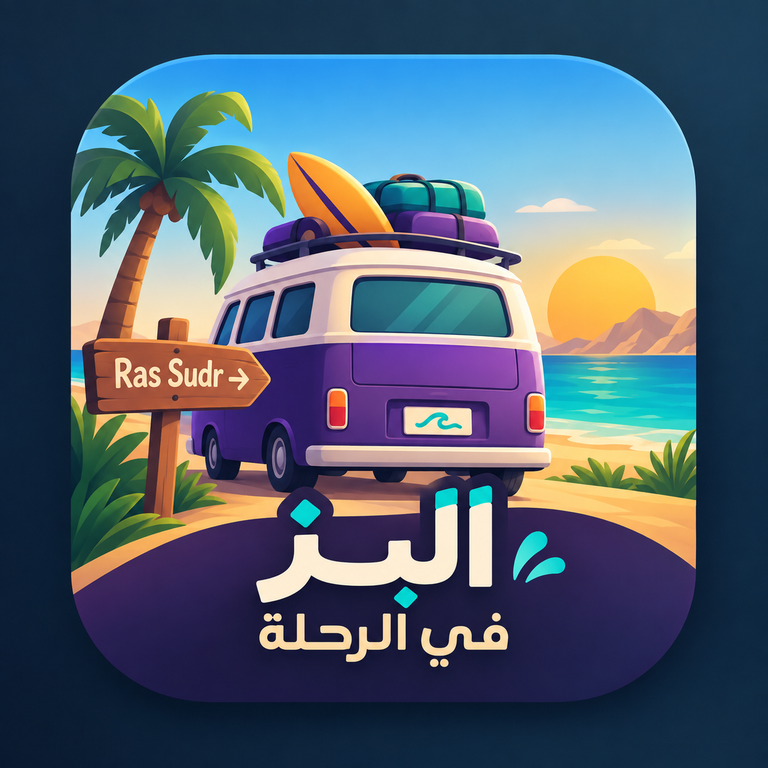

AL ASHQEYA ACCESS 😎
دخول الأشقياء
اختار اسمك. أول مرة بس هتعمل PIN خاص بيك.

أول مرة هنا؟
نزّل «البز في الرحلة V2» على موبايلك
هيظهر عندك كتطبيق وتدخل عليه بعد كده على طول.
MOBILE APP ONLY
نزّل «البز في الرحلة V2» الأول 📲
علشان تدخل من الموبايل لازم تضيف التطبيق على الشاشة الرئيسية. بعد التثبيت افتحه من الأيقونة، وساعتها هيظهر اختيار الاسم والـPIN.
iPhone؟
افتح الصفحة في Safari واضغط Share ثم Add to Home Screen.
من الكمبيوتر تقدر تدخل عادي من المتصفح.
الجهاز هيفتكر دخولك تلقائيًا. لو فتحت من جهاز جديد هتكتب الـPIN بتاعك.